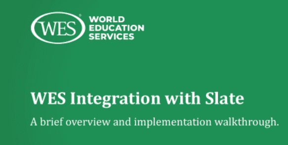

Informational Resources
Slate integration helps you save time and administrative resources, while more easily meeting your international enrollment goals.
Join members of WES and New York University’s Steinhardt School of Culture, Education, and Human Development to discuss the WES integration with Slate – a tool that automatically uploads completed WES evaluations and authenticated documents directly into your Slate instance.
– Learn how institutions are using the integration to improve their admissions process
– Hear about recent updates that make the integration even more useful for our institutional partners
